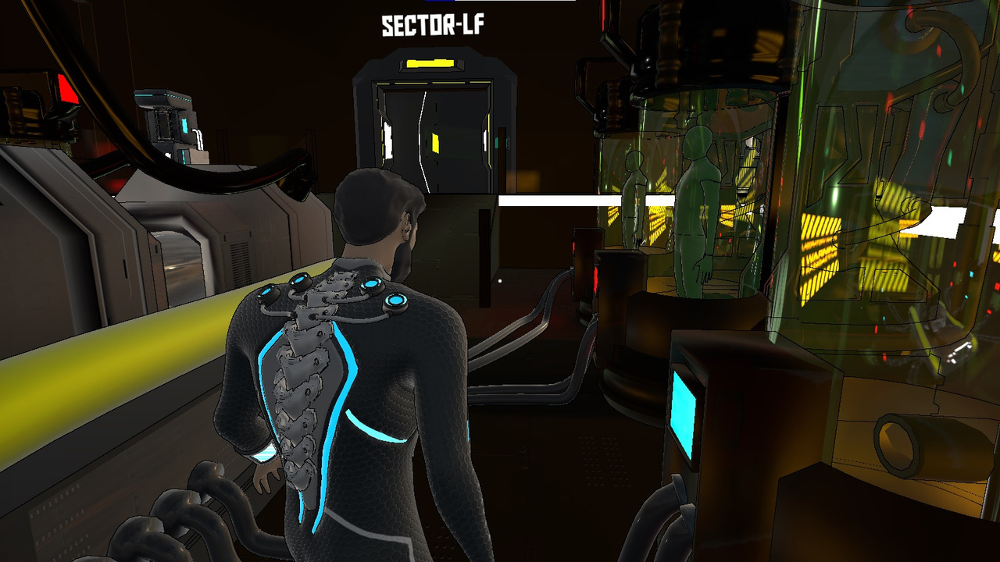

Supervised Games
Specialist Instructor
As a teacher in the game specialization course, I've had the opportunity to teach classes and supervise student projects. While the following video games were not created by me, I have been guiding and assisting in the programming aspects of their development.
Sirius
Trailer, content, authors, and download link can be found on their website.
Egonism
Content, authors, and download link can be found on their website.

Depths of Despair
Currently, Depths of Despair is not available.